Практичні курси · журнал «ДентАрт» 2018 №1
Роль ультразвукової системи Vector Paro у комплексному лікуванні захворювань пародонту
ROLE OF THE VECTOR SYSTEM IN THE COMPREHENSIVE TREATMENT OF PERIODONTAL DISEASE
Тамара Модіна,Вікторія Раєвська
Відомо, що поширеність захворювань пародонту, за даними ВООЗ, у різних країнах і регіонах варіює від 40% до 100%. При цьому факторами ризику можуть бути спадкова схильність, вік та національно-етнічна приналежність, а також соматична патологія і навіть географічне розташування місць проживання та професія пацієнтів.
Ультразвукова система Vector Paro вже понад 15 років активно використовується передусім при лікуванні пацієнтів із запально-деструктивними процесами пародонту. У статті описано принцип роботи цієї системи та наведено клінічні приклади успішної терапії із системою Vector.
Світ сучасної медицини цікавий і різноманітний новими технологіями, науковими розробками та відкриттями. І це спостерігається у всіх галузях медицини, у тому числі й стоматології.
Величезний потік інформації падає на терапевта під час стоматологічних конференцій, конгресів, виставок, семінарів, де демонструються нові технології, інструменти, методики, які, з точки зору виробника і реклами, є найпрогресивнішими та найкращими в лікуванні стоматологічних пацієнтів. І виробник намагається показати тільки переваги, важливість та необхідність застосування цих технологій у клінічній практиці для лікування багатьох стоматологічних захворювань. Однак кожен спеціаліст намагається обрати і застосовувати ті технології та методики, які мають свою історію позитивного досвіду, клінічних спостережень і віддалених результатів. Так, понад 15 років у клінічній практиці стоматологів застосовується ультразвукова система Vector Paro, яка активно використовується передусім при лікуванні пацієнтів із запально-деструктивними процесами пародонту.
Розвиток захворювань пародонту зумовлений активною інвазією агресивної мікрофлори та порушенням реакції імунної відповіді на бактеріальну інфекцію у ротовій порожнині. При цьому запально-деструктивні процеси, що виникають у пародонті, призводять до нестабільності зубо-щелепної системи, яка проявляється деформацією оклюзії, зміною положення зубів і створенням суперконтактів. Відбуваються зміщення векторного навантаження зубів, посилення процесів деструкції кісткової тканини альвеолярного відростка, що призводить до рухливості та втрати зубів.
Пародонтит супроводжується утворенням пародонтальних кишень (від 8 до 14 мм), резорбцією кісткової тканини альвеолярного відростка з утворенням кісткових кишень, що підтверджується даними рентгенологічного дослідження. Окрім цього, у пацієнтів часто виникають хронічні процеси в зубах та періапікальних тканинах (пульпіт, періодонтит), одонтогенні синусити. Нерідко пародонтит поєднується і з хворобами слизової оболонки ротової порожнини.
Тому при проведенні комплексу лікувальних заходів пацієнтам з патологією пародонту потрібен міждисциплінарний підхід, де крім стоматологів можуть активно залучатися лікарі інших спеціальностей.
Активне лікування починається з професійної гігієни, санації ротової порожнини, а також антибактеріальної терапії для зупинки активного запального процесу. Одним з успішно застосовуваних методів антибактеріальної терапії є система Vector.
В основі роботи апарата лежить застосування ультразвуку. Ультразвук – це високочастотні хвилі, які не можуть бути виявлені людським вухом, вони мають безліч цікавих застосувань у техніці, медицині та інших галузях. Частота ультразвукових коливань, що застосовуються в медицині, лежить у діапазоні від кГц до мГц і ділиться на низькочастотні та високочастотні. Низькочастотні ультразвукові хвилі (до 20-25 кГц) застосовують у хірургії, а високочастотні – у терапевтичному лікуванні. Ультразвукова хірургія поділяється на два різновиди, один із яких пов'язаний з руйнуванням тканин власне звуковими коливаннями, а другий – із накладанням ультразвукових коливань на хірургічний інструмент. У першому випадку застосовується фокусований ультразвук з частотами порядку 106-107 Гц, у другому – коливання на частотах 20-75 кГц з амплітудою 10-50 мкм. Ультразвук, що застосовується в системі Vector Paro з довжиною хвилі 25 кГц і частотою 10-15 мкм, – це так звана межова зона «хірургія – терапія». Тому його використання найбільш щадне і не викликає локальних руйнувань клітин і тканин. Працюючи як «хірург», ультразвук здатен видаляти грануляції з пародонтальної кишені, зубні камені, при цьому значно знижується ризик інфікування та прискорюється процес заживлення тканин.
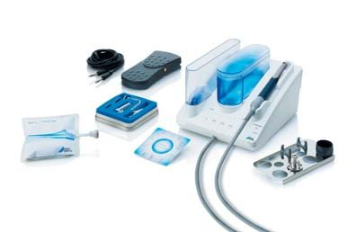
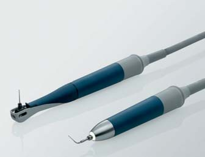
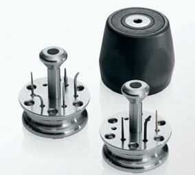
Комплектація Vector Paro, інструменти Perio і Recall, наконечник Vector Paro і Vector Scaler.
При впливі ультразвуку на тканини виділяють такі фази реакції у відповідь:
- фаза безпосереднього впливу при проведенні процедур, коли відбувається мікроальтерація клітинних структур під дією механічного, фізико-хімічного і теплового впливу;
- фаза домінування стрес-індукованої системи, коли відбувається активація перекисного окислення ліпідів, викид біологічних амінів і гормонів, що створює протизапальний ефект. При цьому підвищується фагоцитарна функція лейкоцитів, відбувається руйнування клітинної оболонки мікроорганізмів та вірусів. Активізуються механізми неспецифічної, імунологічної реакції організму. Тривалість цього етапу становить 4 години після впливу ультразвуку;
- фаза стрес-лімітуючої системи, коли репаративні процеси у тканинах прискорюються за рахунок посилення метаболізму клітин. Тривалість цієї фази – 4-12 годин після впливу;
- фаза посилення компенсаторно-пристосовних процесів, коли спостерігається збільшення мітотичної активності клітин, активності мітохондрій, тканинного дихання, стимуляція мікро- та лімфоциркуляції. Тривалість фази – 12-24 години після впливу;
- фаза пізнього слідового періоду, коли відбувається активація всіх видів обміну протягом 3 місяців. Фазою цього періоду, а також трансформацією через 90 днів зубної бляшки в зубний камінь, наявністю запалення маргінальних ясен та пародонтальних кишень пояснюється проведення повторної процедури Vector Paro через три місяці.
Застосування системи Vector – один з важливих етапів комплексного лікування, який провадиться, як правило, після етапу професійної гігієни. Однак цю систему можна використовувати і на початковому етапі, маючи у своєму арсеналі наконечник-скайлер. За допомогою спеціальних насадок ультразвуковим апаратом Vector провадиться зняття під'ясенних зубних відкладень, бактерій, біоплівки з поверхонь зубів і коренів, грануляційної тканини з пародонтальних кишень, у зоні фуркацій, не порушуючи твердих і м'яких тканин пародонту, одночасно поліруючи за допомогою спеціальних суспензій Vector Fluid Polish, що містять частинки гідроксиапатиту.
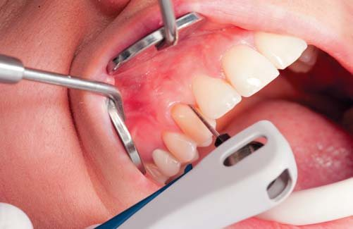
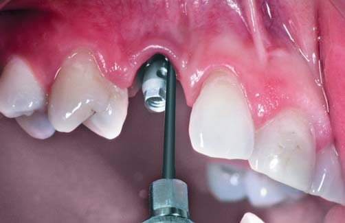
При використанні системи Vector на етапах комплексного лікування для запобігання реінфікуванню пародонтальних кишень слід провадити обробку маргінальних ясен у зоні всіх зубів верхньої і нижньої щелеп за одне відвідування, а за відсутності необхідного часу наступне відвідування пацієнта має бути не пізніше, ніж через 15-20 годин. Лікар оцінює гігієну ротової порожнини і усуває локальні осередки запалення. Як правило, позитивна динаміка помітна вже на 3-5 добу. Однак при генералізації патологічного процесу в тканинах пародонту і при виражених пародонтальних кишенях однієї процедури буває недостатньо.
Часто у пародонтологів побутує поняття «мокрих» або «сухих» пародонтальних кишень. Багато лікарів вважає, що достатньо буде усунути порушення і зупинити процес гноєтечі або ексудації. Однак на практиці «суха» пародонтальна кишеня є потенційною зоною активного запалення і здатна спровокувати ще одне загострення. Основне завдання лікаря полягає не лише в усуненні загострення, але і в можливості домогтися щільного прилягання маргінальних ясен до зуба, тобто усунення пародонтальної кишені. Тому при збереженні пародонтальних кишень після неодноразового застосування ультразвукового апарата Vector робляться клаптеві операції з використанням остеопластичних матеріалів і спрямованої тканинної регенерації.
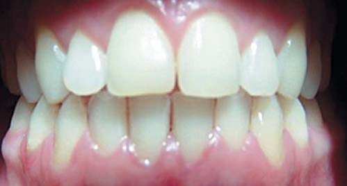
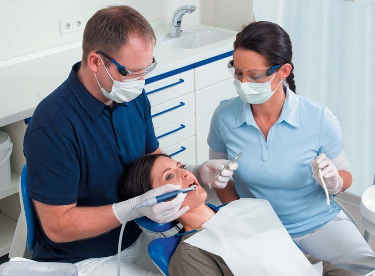
Гіпертрофічний гінгівіт. Пацієнт М., 18 років. Стан тканин пародонту на 5-у добу після обробки тканин системою Vector Paro.
Слід зазначити, що ортодонтичне лікування у поєднанні з обробкою пародонтальних кишень системою Vector дає позитивні результати. Тому не варто торпедувати події з проведення радикальних хірургічних методів пародонтальної хірургії, оскільки усунення дислокації зубів і створення умов для вертикального навантаження на зуби сприяє їх заглибленню в тканини пародонту і супроводжується приростом кісткової тканини.
Обробка пародонтальних кишень ультразвуковим апаратом Vector на етапах ортодонтичної терапії робиться кожні три місяці протягом року, враховуючи, що незнімна ортодонтична апаратура ускладнює проведення адекватної гігієни в домашніх умовах, а активне переміщення зубів може викликати запалення тканин пародонту. Тому ортодонтові слід враховувати специфіку патологічного процесу, особливо швидкопрогресуючі форми пародонтиту, і акцентувати увагу на швидкості переміщення зубів, не вдаючись до агресивної техніки.
Процедура професійної гігієни і обробка системою Vector після завершення ортодонтичного лікування – необхідна умова для подальшого комплексу лікувальних заходів: шинування зубів, ортопедичного лікування, хірургічних втручань на пародонті, імплантації.
Однак слід пам'ятати, що лікування пацієнтів є комплексним, тому використання тільки системи Vector Paro не може вирішити такі завдання, як відновлення структури кісткової тканини альвеолярного відростка, усунення вторинної деформації і нормалізація оклюзії. Це під силу лише команді спеціалістів.
Клінічний випадок 1
Гіпертрофічний гінгівіт. Пацієнт М., 18 років. Стан тканин пародонту на 5-у добу після обробки тканин системою Vector Paro.
Клінічний випадок 2
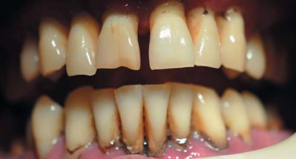
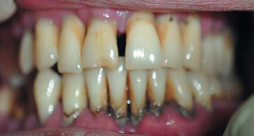
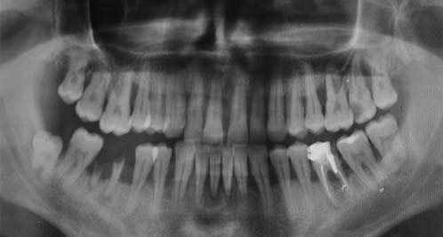
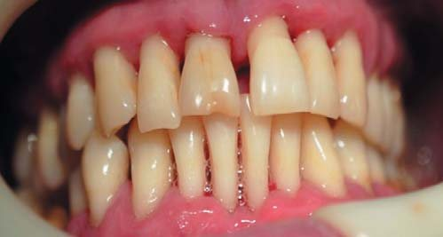
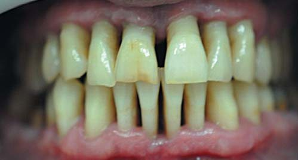
Агресивний пародонтит на фоні гепатиту С у стадії ремісії. Пацієнт Г., 28 років. Візуальний стан пародонту до, відразу після процедури обробки тканин системою Vector Paro (тривалість 3 години) і через тиждень.
Клінічний випадок 3
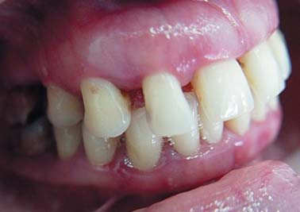
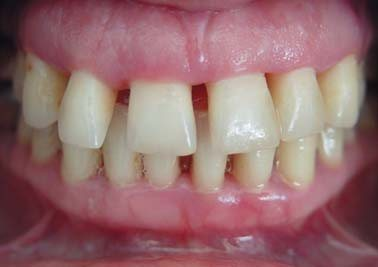
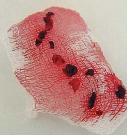
Агресивний пародонтит. Пацієнтка А., 33 роки. Стан тканин пародонту на 5-у добу після обробки тканин системою Vector Paro. Одержані грануляції з пародонтальних кишень.
Клінічний випадок 4
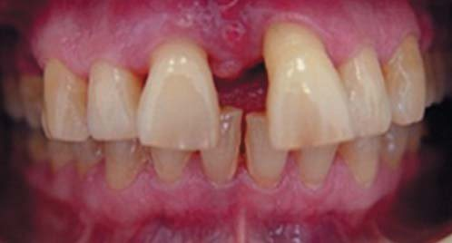
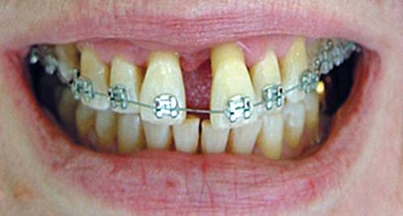
Пацієнтка Д., 58 років. Генералізований пародонтит.
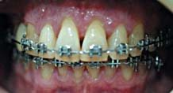
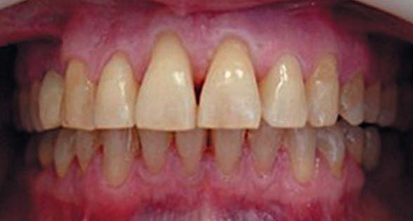
Стан зубів і тканин пародонту до, на етапі ортодонтичного лікування і через 18 місяців після закінчення лікування.
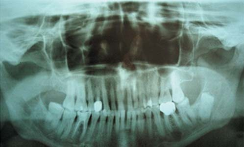
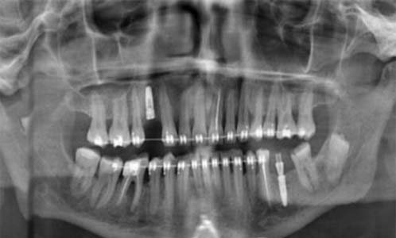
Панорамні рентгенограми до і перед зняттям апаратури через 18 місяців.
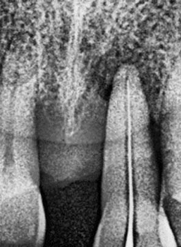
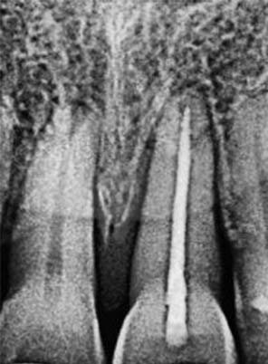
Стан кісткової тканини до і через 18 місяців після лікування.
Комплексне лікування включало зняття зубних відкладень системою Vector та ортодонтичне лікування. До лікування пацієнтку попередили, що зуб 21 буде використано лише як тимчасову опору для встановлення незнімної ортодонтичної апаратури, враховуючи виражену деструкцію кісткової тканини навколо кореня зуба. У зону видалених зубів 14 і 36 встановлено імплантати. Лікування провадилося 18 місяців, в результаті відбулося ремоделювання кісткової тканини навколо кореня зуба 21. Зуб збережений і шинований ортодонтичним ретейнером.